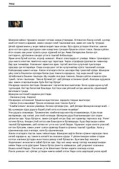

JUrush davridagi og'ir turmush sharoitlari va oddiy oilaning mashaqqatli hayoti hikoya qilinadi.
Ushbu asarda urush davri mashaqqatlari, kambag'allik va og'ir turmush sharoitida qolgan oddiy oilaning hayoti tasvirlangan. Bosh qahramon Shoyikromning kechinmalari, oilaviy muammolari va jamiyatdagi og'ir muhit hikoya qilinadi.